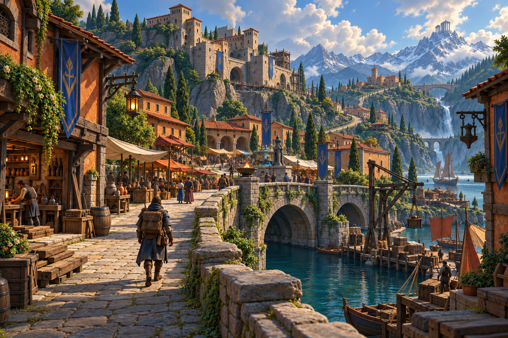

01 / AmbientesProposta visual
Entrepostos e rota comercial
Documento v2.1 · páginas 13, 17–18
Região proposta; materiais e formas arquitetônicas derivados da base. A disposição dos entrepostos, relevo e paleta são estudos visuais.
Abrir PNG original